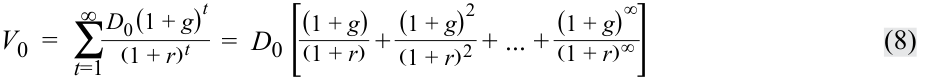
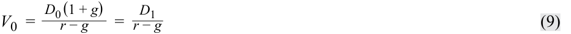
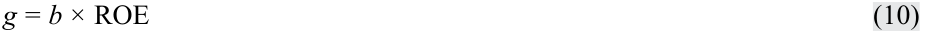
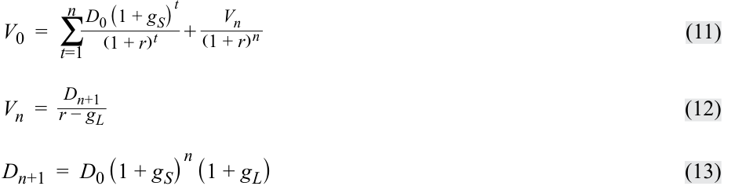
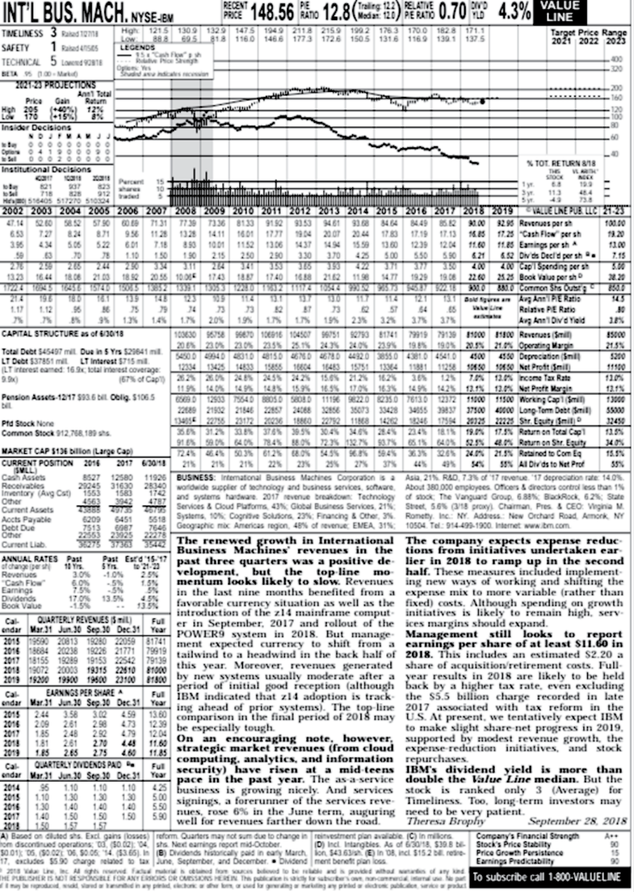
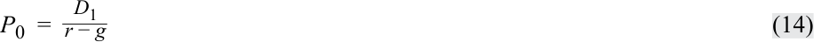
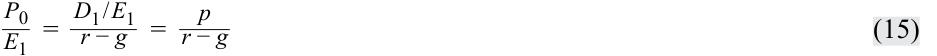
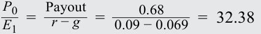

Learning Module 8 Equity Valuation: Concepts and Basic Tools - Part 2: The Gordon Growth Model
Volume 5: Equity Investments
Learning Module 8 Equity Valuation: Concepts and Basic Tools
Part 2/4: The Gordon Growth Model (PDF Pages 360–372)
Tập 5: Đầu tư Cổ phiếu (Volume 5: Equity Investments)
Học phần 8: Định giá Cổ phiếu: Các Khái niệm và Công cụ Cơ bản (Equity Valuation: Concepts and Basic Tools)
Phần 2/4: Mô hình Tăng trưởng Gordon (The Gordon Growth Model) (Trang PDF 360–372)
7
7
THE GORDON GROWTH MODEL
MÔ HÌNH TĂNG TRƯỞNG GORDON (THE GORDON GROWTH MODEL)
calculate and interpret the intrinsic value of an equity security based on the Gordon (constant) growth dividend discount model or a two-stage dividend discount model, as appropriate
tính toán và diễn giải giá trị nội tại của một chứng khoán vốn dựa trên mô hình chiết khấu cổ tức tăng trưởng đều Gordon (Gordon (constant) growth dividend discount model) hoặc mô hình chiết khấu cổ tức hai giai đoạn (two-stage dividend discount model), tùy trường hợp phù hợp
identify characteristics of companies for which the constant growth or a multistage dividend discount model is appropriate explain advantages and disadvantages of each category of valuation model
xác định các đặc điểm của những công ty phù hợp để áp dụng mô hình chiết khấu cổ tức tăng trưởng đều hoặc đa giai đoạn (multistage dividend discount model) giải thích các ưu điểm và nhược điểm của từng nhóm mô hình định giá
A rather obvious problem when one is trying to implement Equation 1 for common equity is that it requires the analyst to estimate an infinite series of expected dividends. To simplify this process, analysts frequently make assumptions about how dividends will grow or change over time. The Gordon (constant) growth model (Gordon, 1962) is a simple and well-recognized DDM. The model assumes dividends grow indefinitely at a constant rate.
Một vấn đề khá hiển nhiên khi cố gắng áp dụng Phương trình 1 cho vốn chủ sở hữu phổ thông là phương trình này đòi hỏi chuyên gia phân tích phải ước tính một chuỗi vô hạn các khoản cổ tức dự kiến. Để đơn giản hóa quá trình này, các chuyên gia phân tích thường đưa ra những giả định về cách thức cổ tức sẽ tăng trưởng hoặc thay đổi theo thời gian. Mô hình tăng trưởng (đều) Gordon (Gordon (constant) growth model – Gordon, 1962) là một mô hình chiết khấu cổ tức (DDM) đơn giản và được công nhận rộng rãi. Mô hình này giả định cổ tức tăng trưởng vô thời hạn ở một tốc độ không đổi.
Because of its assumption of a constant growth rate, the Gordon growth model is particularly appropriate for valuing the equity of dividend-paying companies that are relatively insensitive to the business cycle and in a mature growth phase. Examples might include an electric utility serving a slowly growing area or a producer of a staple food product (e.g., bread). A history of increasing the dividend at a stable growth rate is another practical criterion if the analyst believes that pattern will hold in the future.
Bởi vì giả định tốc độ tăng trưởng không đổi, mô hình tăng trưởng Gordon đặc biệt phù hợp để định giá vốn chủ sở hữu của các công ty có trả cổ tức, tương đối ít nhạy cảm với chu kỳ kinh doanh (business cycle) và đang ở giai đoạn tăng trưởng trưởng thành/bão hòa (mature growth phase). Các ví dụ có thể bao gồm một công ty tiện ích điện lực phục vụ một khu vực tăng trưởng chậm hoặc một nhà sản xuất mặt hàng thực phẩm thiết yếu (ví dụ: bánh mì). Lịch sử tăng cổ tức ở một tốc độ tăng trưởng ổn định là một tiêu chí thực tiễn khác nếu chuyên gia phân tích tin rằng khuôn mẫu đó sẽ tiếp tục duy trì trong tương lai.
With a constant growth assumption, Equation 1 can be written as Equation 8, where g is the constant growth rate:
Với giả định tăng trưởng không đổi, Phương trình 1 có thể được viết lại thành Phương trình 8, trong đó $g$ là tốc độ tăng trưởng không đổi (constant growth rate):

If required return r is assumed to be strictly greater than growth rate g , then the square-bracketed term in Equation 8 is an infinite geometric series and sums to [(1 + g )/( r – g )]. Substituting into Equation 8 produces the Gordon growth model as presented in Equation 9:
Nếu tỷ suất sinh lợi yêu cầu $r$ được giả định là lớn hơn nghiêm ngặt so với tốc độ tăng trưởng $g$ ($r > g$), thì biểu thức trong ngoặc vuông ở Phương trình 8 là một cấp số nhân lùi vô hạn (infinite geometric series) và có tổng bằng $[(1 + g)/(r - g)]$. Thay vào Phương trình 8 sẽ tạo ra mô hình tăng trưởng Gordon như được trình bày trong Phương trình 9:

For an illustration of the expression, suppose the current (most recent) annual dividend on a share is €5.00 and dividends are expected to grow at 4 percent per year. The required rate of return on equity is 8 percent. The Gordon growth model estimate of intrinsic value is, therefore, €5.00(1.04)/(0.08 – 0.04) = €5.20/0.04 = €130 per share. Note that the numerator is D 1 not D 0. (Using the wrong numerator is a common error.)
Để minh họa cho biểu thức này, giả sử cổ tức hàng năm hiện tại (gần đây nhất) của một cổ phiếu là €5.00 và cổ tức dự kiến sẽ tăng trưởng ở mức 4 phần trăm mỗi năm. Tỷ suất sinh lợi yêu cầu đối với vốn chủ sở hữu là 8 phần trăm. Do đó, ước tính giá trị nội tại theo mô hình tăng trưởng Gordon là $€5.00(1.04)/(0.08 - 0.04) = €5.20/0.04 = €130$ trên mỗi cổ phiếu. Lưu ý rằng tử số là $D_1$ chứ không phải $D_0$. (Sử dụng sai tử số là một lỗi phổ biến.)
The Gordon growth model estimates intrinsic value as the present value of a growing perpetuity. If the growth rate, g , is assumed to be zero, Equation 8 reduces to the expression for the present value of a perpetuity, given earlier as Equation 6.
Mô hình tăng trưởng Gordon ước tính giá trị nội tại như là giá trị hiện tại của một niên kim vĩnh cửu tăng trưởng đều (growing perpetuity). Nếu tốc độ tăng trưởng, $g$, được giả định bằng 0, Phương trình 8 sẽ rút gọn về biểu thức tính giá trị hiện tại của một niên kim vĩnh cửu không đổi, đã được cho trước đó ở Phương trình 6.
In estimating a long-term growth rate, analysts use a variety of methods, including assessing the growth in dividends or earnings over time, using the industry median growth rate, and using the relationship shown in Equation 10 to estimate the sustainable growth rate:
Khi ước tính tốc độ tăng trưởng dài hạn, các chuyên gia phân tích sử dụng nhiều phương pháp khác nhau, bao gồm việc đánh giá mức tăng trưởng của cổ tức hoặc thu nhập theo thời gian, sử dụng tốc độ tăng trưởng trung vị của ngành, và sử dụng mối quan hệ được trình bày trong Phương trình 10 để ước tính tốc độ tăng trưởng bền vững (sustainable growth rate):

where
trong đó
g = dividend growth rate
$g =$ tốc độ tăng trưởng cổ tức (dividend growth rate)
b = earnings retention rate = (1 – Dividend payout ratio)
$b =$ tỷ lệ lợi nhuận giữ lại (earnings retention rate) $= (1 - \text{Tỷ lệ chi trả cổ tức } [\text{Dividend payout ratio}])$
ROE = return on equity
$\text{ROE} =$ tỷ suất sinh lợi trên vốn chủ sở hữu (return on equity)
Example 7 illustrates the application of the Gordon growth model to the shares of a large industrial manufacturing company. The analyst believes it will continue to grow at a rate that it achieved in the previous three years and remain stable in the future. The example asks how much the dividend growth assumption adds to the intrinsic value estimate. The question is relevant to valuation because if the amount is high on a percentage basis, a large part of the value of the share depends on the realization of the growth estimate. One can answer the question by subtracting from the intrinsic value estimate determined by Equation 9 the value determined by Equation 6, which assumes no dividend growth.3
Ví dụ 7 minh họa việc áp dụng mô hình tăng trưởng Gordon đối với cổ phiếu của một công ty sản xuất công nghiệp lớn. Chuyên gia phân tích tin rằng công ty sẽ tiếp tục tăng trưởng ở tốc độ mà nó đã đạt được trong ba năm trước đó và duy trì ổn định trong tương lai. Ví dụ này đặt câu hỏi rằng giả định tăng trưởng cổ tức đóng góp bao nhiêu vào ước tính giá trị nội tại. Câu hỏi này có ý nghĩa liên quan đến việc định giá bởi vì nếu con số này cao xét theo tỷ lệ phần trăm, thì một phần lớn giá trị của cổ phiếu phụ thuộc vào việc hiện thực hóa ước tính tăng trưởng đó. Người ta có thể trả lời câu hỏi này bằng cách lấy ước tính giá trị nội tại được xác định bởi Phương trình 9 trừ đi giá trị được xác định bởi Phương trình 6 (vốn giả định cổ tức không tăng trưởng).3
EXAMPLE 7
VÍ DỤ 7 (EXAMPLE 7)
Applying the Gordon Growth Model
Áp dụng Mô hình Tăng trưởng Gordon (Applying the Gordon Growth Model)
Siemens AG operates in the capital goods and technology space. It is involved in the engineering, manufacturing, automation, power, and transportation sectors. It operates globally and is one of the largest companies in the sectors in which it operates. It is a substantial employer in both its original, domestic German market, as well as dozens of countries around the world. Selected financial information for Siemens appears in Exhibit 3.
Siemens AG hoạt động trong lĩnh vực tư liệu sản xuất (capital goods) và công nghệ. Công ty tham gia vào các lĩnh vực kỹ thuật, sản xuất chế tạo, tự động hóa, năng lượng và giao thông vận tải. Công ty hoạt động trên phạm vi toàn cầu và là một trong những tập đoàn lớn nhất trong các lĩnh vực mà mình tham gia. Đây là một nhà tuyển dụng lớn cả ở thị trường nội địa Đức nguyên bản lẫn tại hàng chục quốc gia trên khắp thế giới. Thông tin tài chính chọn lọc của Siemens xuất hiện trong Bảng minh họa 3 (Exhibit 3).
Exhibit 3: Selected Financial Information for Siemens AG
Bảng minh họa 3: Thông tin Tài chính Chọn lọc của Siemens AG (Exhibit 3: Selected Financial Information for Siemens AG)
| Year | 2017 | 2016 | 2015 | 2014 | 2013 |
|---|---|---|---|---|---|
| EPS | €7.45 | €6.74 | €8.85 | €6.37 | €5.08 |
| DPS | €3.7 | €3.6 | €3.5 | €3.3 | €3.0 |
| Payout ratio | 50% | 53% | 40% | 52% | 59% |
| ROE | 15.6% | 15.9% | 22.3% | 18.2% | 14.6% |
| Share price | |||||
| (XETRA - Frankfurt) |
€119.2 | €104.2 | €79.94 | €94.37 | €89.06 |
| Năm (Year) | 2017 | 2016 | 2015 | 2014 | 2013 |
|---|---|---|---|---|---|
| EPS | €7.45 | €6.74 | €8.85 | €6.37 | €5.08 |
| DPS | €3.7 | €3.6 | €3.5 | €3.3 | €3.0 |
| Tỷ lệ chi trả cổ tức (Payout ratio) | 50% | 53% | 40% | 52% | 59% |
| ROE | 15.6% | 15.9% | 22.3% | 18.2% | 14.6% |
| Giá cổ phiếu (Share price) (XETRA - Frankfurt) |
€119.2 | €104.2 | €79.94 | €94.37 | €89.06 |
Note: DPS stands for “dividends per share.”
Lưu ý: DPS viết tắt của "cổ tức trên mỗi cổ phiếu (dividends per share)."
Source: Morningstar, www .siemens .com.
Nguồn: Morningstar, www.siemens.com.
The analyst estimates the growth rate to be approximately 5.4 percent based on the dividend growth rate over the period 2013 to 2017 [3(1 + g )4 = 3.7, so g = 5.4%]. To verify that the estimated growth rate of 5.4 percent is feasible in the future, the analyst also uses the average of Siemens’s retention rate and ROE for the previous five years ( g ≈ 0.49 × 17.3% ≈ 8.5%) to estimate the sustainable growth rate.
Chuyên gia phân tích ước tính tốc độ tăng trưởng vào khoảng 5.4 phần trăm dựa trên tốc độ tăng trưởng cổ tức trong giai đoạn từ năm 2013 đến năm 2017 $[3(1 + g)^4 = 3.7$, suy ra $g = 5.4\%]$. Để xác minh rằng tốc độ tăng trưởng ước tính 5.4 phần trăm là khả thi trong tương lai, chuyên gia phân tích cũng sử dụng mức trung bình của tỷ lệ lợi nhuận giữ lại và ROE của Siemens trong năm năm trước đó $(g \approx 0.49 \times 17.3\% \approx 8.5\%)$ để ước tính tốc độ tăng trưởng bền vững.
Using a number of approaches, including adding a risk premium to a longterm German government bond and using the CAPM, the analyst estimates a required return of 7.5 percent. The most recent dividend of €3.70 is used for D0 .
Sử dụng một số cách tiếp cận, bao gồm việc cộng một phần bù rủi ro vào trái phiếu chính phủ Đức dài hạn và sử dụng mô hình CAPM, chuyên gia phân tích ước tính tỷ suất sinh lợi yêu cầu là 7.5 phần trăm. Khoản cổ tức gần nhất là €3.70 được sử dụng cho $D_0$.
- Use the Gordon growth model to estimate Siemens’s intrinsic value.
- Sử dụng mô hình tăng trưởng Gordon để ước tính giá trị nội tại của Siemens.
Solution:
Lời giải:
- How much does the dividend growth assumption add to the intrinsic value estimate?
- Giả định tăng trưởng cổ tức đóng góp bao nhiêu vào ước tính giá trị nội tại?
Solution:
Lời giải:
- Based on the estimated intrinsic value, is a share of Siemens undervalued, overvalued, or fairly valued?
- Dựa trên giá trị nội tại ước tính, một cổ phiếu của Siemens đang bị định giá thấp, định giá cao, hay định giá hợp lý?
Solution:
Lời giải:
A share of Siemens appears to be undervalued. The analyst, before making a recommendation, might consider how realistic the estimated inputs are and check the sensitivity of the estimated value to changes in the inputs.
Một cổ phiếu của Siemens dường như đang bị định giá thấp (undervalued – vì giá thị trường năm 2017 là €119.2 thấp hơn €185.70). Trước khi đưa ra khuyến nghị, chuyên gia phân tích có thể cân nhắc xem các dữ liệu đầu vào ước tính có thực tế hay không và kiểm tra độ nhạy của giá trị ước tính đối với những thay đổi trong các dữ liệu đầu vào.
- What is the intrinsic value if the growth rate estimate is lowered to 4.4 percent?
- Giá trị nội tại là bao nhiêu nếu ước tính tốc độ tăng trưởng được hạ xuống mức 4.4 phần trăm?
Solution:
Lời giải:
- What is the intrinsic value if the growth rate estimate is lowered to 4.4 percent and the required rate of return estimate is increased to 8.5 percent?
- Giá trị nội tại là bao nhiêu nếu ước tính tốc độ tăng trưởng được hạ xuống mức 4.4 phần trăm và ước tính tỷ suất sinh lợi yêu cầu được tăng lên mức 8.5 phần trăm?
Solution:
Lời giải:
The Gordon growth model estimate of intrinsic value is extremely sensitive to the choice of required rate of return r and growth rate g . It is possible that the growth rate assumption and the required return assumption used initially were too high. Worldwide economic growth is typically in the low single digits, which may mean that a large company such as Siemens may struggle to grow dividends at 5.4 percent into perpetuity. Exhibit 4 presents a further sensitivity analysis of Siemens’s intrinsic value to the required return and growth estimates.
Ước tính giá trị nội tại theo mô hình tăng trưởng Gordon cực kỳ nhạy cảm với việc lựa chọn tỷ suất sinh lợi yêu cầu $r$ và tốc độ tăng trưởng $g$. Có khả năng là giả định tốc độ tăng trưởng và giả định tỷ suất sinh lợi yêu cầu được sử dụng ban đầu đã quá cao. Tăng trưởng kinh tế toàn cầu thường chỉ ở mức một chữ số thấp, điều này có thể đồng nghĩa với việc một công ty lớn như Siemens sẽ phải chật vật mới có thể tăng trưởng cổ tức ở mức 5.4 phần trăm mãi mãi. Bảng minh họa 4 (Exhibit 4) trình bày một phân tích độ nhạy sâu hơn đối với giá trị nội tại của Siemens theo các ước tính tỷ suất sinh lợi yêu cầu và tốc độ tăng trưởng.
Exhibit 4: Sensitivity Analysis of the Intrinsic-Value Estimate for Siemens AG
Bảng minh họa 4: Phân tích Độ nhạy đối với Ước tính Giá trị Nội tại của Siemens AG (Exhibit 4: Sensitivity Analysis of the Intrinsic-Value Estimate for Siemens AG)
| g = 2.5% | g = 3.5% | g = 4.5% | g = 5.5% | g = 6.5% | |
|---|---|---|---|---|---|
| r= 6% | €108.4 | €153.2 | €257.8 | €780.7 | — |
| r= 7% | €84.3 | €109.4 | €154.7 | €260.2 | €788.1 |
| r= 8% | €69.0 | €85.1 | €110.5 | €156.1 | €262.7 |
| $g = 2.5\%$ | $g = 3.5\%$ | $g = 4.5\%$ | $g = 5.5\%$ | $g = 6.5\%$ | |
|---|---|---|---|---|---|
| $r = 6\%$ | €108.4 | €153.2 | €257.8 | €780.7 | — |
| $r = 7\%$ | €84.3 | €109.4 | €154.7 | €260.2 | €788.1 |
| $r = 8\%$ | €69.0 | €85.1 | €110.5 | €156.1 | €262.7 |
| g = 2.5% | g = 3.5% | g = 4.5% | g = 5.5% | g = 6.5% | |
|---|---|---|---|---|---|
| r= 9% | €58.3 | €69.6 | €85.9 | €111.5 | €157.6 |
| r= 10% | €50.6 | €58.9 | €70.3 | €86.7 | €112.6 |
| $g = 2.5\%$ | $g = 3.5\%$ | $g = 4.5\%$ | $g = 5.5\%$ | $g = 6.5\%$ | |
|---|---|---|---|---|---|
| $r = 9\%$ | €58.3 | €69.6 | €85.9 | €111.5 | €157.6 |
| $r = 10\%$ | €50.6 | €58.9 | €70.3 | €86.7 | €112.6 |
Note that no value is shown when the growth rate exceeds the required rate of return. The Gordon growth model assumes that the growth rate cannot be greater than the required rate of return.
Lưu ý rằng không có giá trị nào được hiển thị khi tốc độ tăng trưởng vượt quá tỷ suất sinh lợi yêu cầu. Mô hình tăng trưởng Gordon giả định rằng tốc độ tăng trưởng không thể lớn hơn tỷ suất sinh lợi yêu cầu.
The assumptions of the Gordon model are as follows:
Các giả định của mô hình Gordon bao gồm:
-
Dividends are the correct metric to use for valuation purposes.
-
The dividend growth rate is forever: It is perpetual and never changes.
-
The required rate of return is also constant over time.
-
The dividend growth rate is strictly less than the required rate of return.
-
Cổ tức là thước đo chính xác để sử dụng cho mục đích định giá.
-
Tốc độ tăng trưởng cổ tức là mãi mãi: Nó là vĩnh cửu và không bao giờ thay đổi.
-
Tỷ suất sinh lợi yêu cầu cũng không đổi theo thời gian.
-
Tốc độ tăng trưởng cổ tức nhỏ hơn nghiêm ngặt so với tỷ suất sinh lợi yêu cầu ($g < r$).
An analyst might be dissatisfied with these assumptions for many reasons. The equities being examined might not currently pay a dividend. The Gordon assumptions might be too simplistic to reflect the characteristics of the companies being evaluated. Some alternatives to using the Gordon model are as follows:
Một chuyên gia phân tích có thể không hài lòng với những giả định này vì nhiều lý do. Các cổ phiếu đang được xem xét có thể hiện tại không trả cổ tức. Các giả định của Gordon có thể quá đơn giản hóa nên không phản ánh được đặc điểm của các công ty đang được đánh giá. Một số phương án thay thế cho việc sử dụng mô hình Gordon như sau:
-
Use a more robust DDM that allows for varying patterns of growth.
-
Use a cash flow measure other than dividends for valuation purposes.
-
Use some other approach (such as a multiplier method) to valuation.
-
Sử dụng một mô hình DDM mạnh mẽ/linh hoạt hơn cho phép các khuôn mẫu tăng trưởng thay đổi khác nhau.
-
Sử dụng một thước đo dòng tiền khác ngoài cổ tức cho mục đích định giá.
-
Sử dụng một cách tiếp cận định giá khác (chẳng hạn như phương pháp bội số).
Applying a DDM is difficult if the company being analyzed is not currently paying a dividend. A company may not be paying a dividend if 1) the investment opportunities the company has are all so attractive that the retention and reinvestment of funds is preferable, from a return perspective, to the distribution of a dividend to shareholders or 2) the company is in such shaky financial condition that it cannot afford to pay a dividend. An analyst might still use a DDM to value such companies by assuming that dividends will begin at some future point in time. The analyst might further assume that constant growth occurs after that date and use the Gordon growth model for valuation. Extrapolating from no current dividend, however, generally yields highly uncertain forecasts. Analysts typically choose to use one or more of the alternatives instead of or as a supplement to the Gordon growth model.
Việc áp dụng DDM sẽ gặp khó khăn nếu công ty đang được phân tích hiện tại không trả cổ tức. Một công ty có thể không trả cổ tức nếu: 1) các cơ hội đầu tư mà công ty có được đều hấp dẫn đến mức việc giữ lại và tái đầu tư nguồn vốn là tốt hơn, xét dưới góc độ tỷ suất sinh lợi, so với việc phân phối cổ tức cho các cổ đông, hoặc 2) công ty đang ở trong tình trạng tài chính bấp bênh đến mức không đủ khả năng chi trả cổ tức. Một chuyên gia phân tích vẫn có thể sử dụng DDM để định giá các công ty như vậy bằng cách giả định rằng cổ tức sẽ bắt đầu được chi trả tại một thời điểm nào đó trong tương lai. Chuyên gia phân tích có thể giả định thêm rằng sự tăng trưởng không đổi sẽ diễn ra sau ngày đó và sử dụng mô hình tăng trưởng Gordon để định giá. Tuy nhiên, việc ngoại suy từ chỗ hiện tại chưa có cổ tức nhìn chung sẽ mang lại những dự báo có độ bất định rất cao. Các chuyên gia phân tích thường chọn sử dụng một hoặc nhiều phương án thay thế thay cho hoặc để bổ trợ cho mô hình tăng trưởng Gordon.
EXAMPLE 8
VÍ DỤ 8 (EXAMPLE 8)
Gordon Growth Model in the Case of No Current Dividend
Mô hình Tăng trưởng Gordon trong Trường hợp Hiện tại Không có Cổ tức (Gordon Growth Model in the Case of No Current Dividend)
- A company does not currently pay a dividend but is expected to begin to do so in five years (at t = 5). The first dividend is expected to be $4.00 and to be received five years from today. That dividend is expected to grow at 6 percent into perpetuity. The required return is 10 percent. What is the estimated current intrinsic value?
- Một công ty hiện tại không trả cổ tức nhưng dự kiến sẽ bắt đầu trả cổ tức sau 5 năm nữa (tại $t = 5$). Khoản cổ tức đầu tiên dự kiến là $4.00 và sẽ nhận được sau 5 năm kể từ hôm nay. Khoản cổ tức đó dự kiến sẽ tăng trưởng ở mức 6 phần trăm mãi mãi. Tỷ suất sinh lợi yêu cầu là 10 phần trăm. Giá trị nội tại hiện tại ước tính là bao nhiêu?
Solution:
Lời giải:
The analyst can value the share in two pieces:
Chuyên gia phân tích có thể định giá cổ phiếu này thành hai phần:
1. The analyst uses the Gordon growth model to estimate the value at t = 5; in the model, the year-ahead dividend is $4(1.06). Then the analyst finds the present value of this value as of t = 0.
1. Chuyên gia phân tích sử dụng mô hình tăng trưởng Gordon để ước tính giá trị tại $t = 5$; trong mô hình này, khoản cổ tức của năm kế tiếp (năm 6) là $\$4(1.06)$. Sau đó chuyên gia phân tích tìm giá trị hiện tại của mức giá trị này tính tại thời điểm $t = 0$.
2. The analyst finds the present value of the $4 dividend not “counted” in the estimate in Piece 1 (which values dividends from _t_ = 6 onward). Note that the statement of the problem implies that _D_ 0, _D_ 1, _D_ 2, _D_ 3, and _D_ 4 are zero. Piece 1: The value of this piece is $65.818: Vn = Dnr_ ( − 1 + g g ) = rD_ − n +1 g _ V_ 5 =$4</sup> 0.10 − 0.06<sup>( 1 + 0.06 ) = $4.24 0.04= $106</sup> _$106 V 0 =( 1 + 0.10)5 = $65.818</sup> Piece 2: The value of this piece is $2.484: _ $4 _V_ 0 =<sup>(</sup> 1 + 0.10<sup>)5 = $2.484
2. Chuyên gia phân tích tìm giá trị hiện tại của khoản cổ tức $4 chưa được "tính" trong ước tính ở Phần 1 (vốn chỉ định giá các khoản cổ tức từ $t = 6$ trở đi). Lưu ý rằng đề bài ngụ ý rằng $D_0, D_1, D_2, D_3,$ và $D_4$ đều bằng 0.
Phần 1: Giá trị của phần này là $65.818:
The sum of the two pieces is $65.818 + $2.484 = $68.30. Alternatively, the analyst could value the share at _t_ = 4, the point at which dividends are expected to be paid in the following year and from which point they are expected to grow at a constant rate. _$4.00 V_ 4 = 0.10 − 0.06= $4.00</sup> 0.04<sup>= $100 _$100 _V_ 0 =<sup>(</sup> 1 + 0.10<sup>)4 = $68.30
Phần 2: Giá trị của phần này là $2.484:
The next section addresses the application of the DDM with more flexible assumptions as to the dividend growth rate.
Tổng của hai phần là $\$65.818 + \$2.484 = \$68.30$. Cách khác, chuyên gia phân tích có thể định giá cổ phiếu tại thời điểm $t = 4$, thời điểm mà cổ tức dự kiến sẽ được chi trả vào năm kế tiếp (năm 5) và từ thời điểm đó chúng dự kiến sẽ tăng trưởng với tốc độ không đổi:
Phần tiếp theo giải quyết việc áp dụng DDM với các giả định linh hoạt hơn về tốc độ tăng trưởng cổ tức.
8 MULTISTAGE DIVIDEND DISCOUNT MODELS
8 CÁC MÔ HÌNH CHIẾT KHẤU CỔ TỨC ĐA GIAI ĐOẠN (MULTISTAGE DIVIDEND DISCOUNT MODELS)
calculate and interpret the intrinsic value of an equity security based on the Gordon (constant) growth dividend discount model or a two-stage dividend discount model, as appropriate
tính toán và diễn giải giá trị nội tại của một chứng khoán vốn dựa trên mô hình chiết khấu cổ tức tăng trưởng đều Gordon hoặc mô hình chiết khấu cổ tức hai giai đoạn, tùy trường hợp phù hợp
identify characteristics of companies for which the constant growth or a multistage dividend discount model is appropriate explain advantages and disadvantages of each category of valuation model
xác định các đặc điểm của những công ty phù hợp để áp dụng mô hình chiết khấu cổ tức tăng trưởng đều hoặc đa giai đoạn giải thích các ưu điểm và nhược điểm của từng nhóm mô hình định giá
Multistage growth models are often used to model rapidly growing companies. The two-stage DDM assumes that at some point the company will begin to pay dividends that grow at a constant rate, but prior to that time the company will pay dividends that are growing at a higher rate than can be sustained in the long run. That is, the company is assumed to experience an initial, finite period of high growth, perhaps prior to the entry of competitors, followed by an infinite period of sustainable growth. The two-stage DDM thus makes use of two growth rates: a high growth rate for an initial, finite period followed by a lower, sustainable growth rate into perpetuity. The Gordon growth model is used to estimate a terminal value at time n that reflects the present value at time n of the dividends received during the sustainable growth period.
Các mô hình tăng trưởng đa giai đoạn (multistage growth models) thường được sử dụng để mô hình hóa các công ty đang tăng trưởng nhanh. Mô hình DDM hai giai đoạn (two-stage DDM) giả định rằng tại một thời điểm nào đó công ty sẽ bắt đầu trả cổ tức tăng trưởng với tốc độ không đổi, nhưng trước thời điểm đó công ty sẽ trả cổ tức đang tăng trưởng ở một tốc độ cao hơn mức có thể duy trì bền vững trong dài hạn. Nghĩa là, công ty được giả định sẽ trải qua một giai đoạn tăng trưởng cao ban đầu và hữu hạn, có lẽ là trước khi có sự gia nhập của các đối thủ cạnh tranh, theo sau bởi một giai đoạn tăng trưởng bền vững vô hạn. Do đó, DDM hai giai đoạn sử dụng hai tốc độ tăng trưởng: một tốc độ tăng trưởng cao cho giai đoạn hữu hạn ban đầu, theo sau là một tốc độ tăng trưởng bền vững thấp hơn kéo dài mãi mãi. Mô hình tăng trưởng Gordon được sử dụng để ước tính giá trị kết thúc (terminal value) tại thời điểm $n$, phản ánh giá trị hiện tại tại thời điểm $n$ của các khoản cổ tức nhận được trong suốt giai đoạn tăng trưởng bền vững.
Equation 11 will be used here as the starting point for a two-stage valuation model. The two-stage valuation model is similar to Example 8 except that instead of assuming zero dividends for the initial period, the analyst assumes that dividends will exhibit a
Phương trình 11 sẽ được sử dụng ở đây làm điểm khởi đầu cho mô hình định giá hai giai đoạn. Mô hình định giá hai giai đoạn tương tự như Ví dụ 8 ngoại trừ việc thay vì giả định cổ tức bằng 0 trong giai đoạn đầu, chuyên gia phân tích giả định rằng cổ tức sẽ thể hiện một
high rate of growth during the initial period. Equation 11 values the dividends over the short-term period of high growth and the terminal value at the end of the period of high growth. The short-term growth rate, gS , lasts for n years. The intrinsic value per share in year n , Vn , represents the year n value of the dividends received during the sustainable growth period or the terminal value at time n . Vn can be estimated by using the Gordon growth model as shown in Equation 12, where gL is the long-term or sustainable growth rate. The dividend in year n + 1, Dn +1, can be determined by using Equation 13:
tốc độ tăng trưởng cao trong suốt giai đoạn đầu. Phương trình 11 định giá các khoản cổ tức trong giai đoạn tăng trưởng cao ngắn hạn và giá trị kết thúc vào cuối giai đoạn tăng trưởng cao đó. Tốc độ tăng trưởng ngắn hạn, $g_S$, kéo dài trong $n$ năm. Giá trị nội tại trên mỗi cổ phiếu vào năm $n$, $V_n$, đại diện cho giá trị tại năm $n$ của các khoản cổ tức nhận được trong giai đoạn tăng trưởng bền vững hay chính là giá trị kết thúc tại thời điểm $n$. $V_n$ có thể được ước tính bằng cách sử dụng mô hình tăng trưởng Gordon như được trình bày trong Phương trình 12, trong đó $g_L$ là tốc độ tăng trưởng dài hạn hay bền vững (long-term or sustainable growth rate). Cổ tức trong năm $n + 1$, $D_{n+1}$, có thể được xác định bằng cách sử dụng Phương trình 13:

EXAMPLE 9
VÍ DỤ 9 (EXAMPLE 9)
Applying the Two-Stage Dividend Discount Model
Áp dụng Mô hình Chiết khấu Cổ tức Hai giai đoạn (Applying the Two-Stage Dividend Discount Model)
- The current dividend, D 0, is $5.00. Growth is expected to be 10 percent a year for three years and then 5 percent thereafter. The required rate of return is 15 percent. Estimate the intrinsic value.
- Cổ tức hiện tại, $D_0$, là $5.00. Tốc độ tăng trưởng dự kiến là 10 phần trăm một năm trong ba năm và sau đó là 5 phần trăm. Tỷ suất sinh lợi yêu cầu là 15 phần trăm. Hãy ước tính giá trị nội tại.
Solution:
Lời giải:
D 1 = $5.00(1 + 0.10) = $5.50
D 2 = $5.00(1 + 0.10)<sup>2</sup> = $6.05 D 3 = $5.00(1 + 0.10)<sup>3</sup> = $6.655 D 4 = $5.00(1 + 0.10)<sup>3</sup> (1 + 0.05) = $6.98775
V_ 3 = 0.15 − 0.05$6.98775= $69.8775 _ _$6.05 _ V_ 0 =<sup>(</sup> 1 + 0.15<sup>$5.50)+ ( 1 + 0.15)2 + ( 1 + 0.15$6.655)3 + (</sup> 1 + 0.15<sup>$69.8775)3 ≈ $59.68
Mô hình DDM có thể được mở rộng ra nhiều giai đoạn tùy theo mức độ phù hợp. Đối với hầu hết các công ty đại chúng (tức là các công ty đã vượt qua giai đoạn khởi nghiệp), những người hành nghề giả định tốc độ tăng trưởng rốt cuộc sẽ rơi vào ba giai đoạn: 1) tăng trưởng (growth), 2) chuyển tiếp (transition), và 3) trưởng thành/bão hòa (maturity). Giả định này củng cố việc sử dụng mô hình DDM ba giai đoạn (three-stage DDM), vốn sử dụng ba tốc độ tăng trưởng: một tốc độ tăng trưởng cao cho giai đoạn hữu hạn đầu tiên, theo sau là một tốc độ tăng trưởng thấp hơn cho giai đoạn hữu hạn thứ hai, và tiếp theo là một tốc độ tăng trưởng bền vững thấp hơn kéo dài mãi mãi.
The DDM can be extended to as many stages as deemed appropriate. For most publicly traded companies (that is, companies beyond the start-up stage), practitioners assume growth will ultimately fall into three stages: 1) growth, 2) transition, and 3) maturity. This assumption supports the use of a three-stage DDM , which makes use of three growth rates: a high growth rate for an initial finite period, followed by a lower growth rate for a finite second period, followed by a lower, sustainable growth rate into perpetuity.
Người ta có thể lập luận rằng DDM ba giai đoạn sẽ phù hợp nhất đối với một công ty khá non trẻ, một công ty vừa mới bước vào giai đoạn tăng trưởng. Mô hình DDM hai giai đoạn sẽ phù hợp để ước tính giá trị của một công ty lâu đời hơn đã đi qua giai đoạn tăng trưởng của mình và hiện đang ở giai đoạn chuyển tiếp (một giai đoạn có tốc độ tăng trưởng cao hơn tốc độ tăng trưởng bền vững) trước khi tiến tới giai đoạn trưởng thành (giai đoạn có tốc độ tăng trưởng bền vững thấp hơn).
One can make the case that a three-stage DDM would be most appropriate for a fairly young company, one that is just entering the growth phase. The two-stage DDM would be appropriate to estimate the value of an older company that has already moved through its growth phase and is currently in the transition phase (a period with a higher growth rate than the sustainable growth rate) prior to moving to the maturity phase (the period with a lower, sustainable growth rate).
However, the choice of a two-stage DDM need not rely solely on the age of a company. Long-established companies sometimes manage to restart above-average growth through, for example, innovation, expansion to new markets, or acquisitions.
Tuy nhiên, việc lựa chọn DDM hai giai đoạn không nhất thiết chỉ dựa vào tuổi đời của công ty. Các công ty đã thành lập lâu năm đôi khi vẫn xoay sở để tái khởi động mức tăng trưởng trên trung bình thông qua, chẳng hạn như, đổi mới sáng tạo, mở rộng sang các thị trường mới, hoặc mua lại và sáp nhập (acquisitions).
Or a company’s long-run growth rate may be interrupted by a period of subnormal performance. If growth is expected to moderate (in the first case) or improve (in the second case) toward some long-term growth rate, a two-stage DDM may be appropriate. Thus, we chose a two-stage DDM to value International Business Machines Corporation in Example 10.
Hoặc tốc độ tăng trưởng dài hạn của một công ty có thể bị gián đoạn bởi một giai đoạn hoạt động kém hơn mức bình thường. Nếu tốc độ tăng trưởng dự kiến sẽ dịu lại (trong trường hợp thứ nhất) hoặc cải thiện (trong trường hợp thứ hai) hướng về một tốc độ tăng trưởng dài hạn nào đó, thì DDM hai giai đoạn có thể sẽ phù hợp. Do đó, chúng ta đã chọn DDM hai giai đoạn để định giá Tập đoàn International Business Machines (IBM) trong Ví dụ 10.
EXAMPLE 10
VÍ DỤ 10 (EXAMPLE 10)
Two-Stage Dividend Discount Model: International Business Machines Corporation
Mô hình Chiết khấu Cổ tức Hai giai đoạn: Tập đoàn International Business Machines (Two-Stage Dividend Discount Model: International Business Machines Corporation)
International Business Machines Corporation (IBM) is a US based leading technology company. IBM was founded in 1911, initially as a company that manufactured machinery for sale and lease, ranging from commercial scales and industrial time recorders, meat and cheese slicers, to punched cards. IBM introduced the personal computer in 1981; however, by the 1990s, it began to suffer losses in its core computer manufacturing business and by the 2000s, it had begun to diversify into business consulting, which was finalized in 2005 when it sold its personal computer business to Chinese company Lenovo. IBM now operates through five segments: Cognitive Solutions, Global Business Services (GBS), Technology Services & Cloud Platforms, Systems, and Global Financing. The Cognitive Solutions segment delivers a spectrum of capabilities from descriptive, predictive, and prescriptive analytics to cognitive systems. Cognitive Solutions includes Watson, a cognitive computing platform that has the ability to interact in natural language, process big data, and learn from interactions with people and computers. The GBS segment provides clients with consulting, application management services, and global process services. The Technology Services & Cloud Platforms segment provides information technology infrastructure services. The Systems segment provides clients with infrastructure technologies. The Global Financing segment includes client financing, commercial financing, and remanufacturing and remarketing.
Tập đoàn International Business Machines (IBM) là một công ty công nghệ hàng đầu có trụ sở tại Hoa Kỳ. IBM được thành lập vào năm 1911, ban đầu là một công ty sản xuất máy móc để bán và cho thuê, từ cân thương mại và máy chấm công công nghiệp, máy thái thịt và phô mai, cho đến thẻ đục lỗ. IBM đã giới thiệu máy tính cá nhân vào năm 1981; tuy nhiên, đến thập niên 1990, công ty bắt đầu chịu thua lỗ trong mảng kinh doanh sản xuất máy tính cốt lõi của mình và đến thập niên 2000, công ty đã bắt đầu đa dạng hóa sang lĩnh vực tư vấn kinh doanh, quá trình này được hoàn tất vào năm 2005 khi hãng bán mảng kinh doanh máy tính cá nhân của mình cho công ty Trung Quốc Lenovo. IBM hiện hoạt động thông qua năm phân khúc: Giải pháp Nhận thức (Cognitive Solutions), Dịch vụ Kinh doanh Toàn cầu (Global Business Services – GBS), Dịch vụ Công nghệ & Nền tảng Đám mây (Technology Services & Cloud Platforms), Hệ thống (Systems), và Tài chính Toàn cầu (Global Financing). Phân khúc Giải pháp Nhận thức cung cấp một dải năng lực từ phân tích mô tả, dự đoán và đề xuất (descriptive, predictive, and prescriptive analytics) cho đến các hệ thống nhận thức. Giải pháp Nhận thức bao gồm Watson, một nền tảng điện toán nhận thức có khả năng tương tác bằng ngôn ngữ tự nhiên, xử lý dữ liệu lớn (big data), và học hỏi từ các tương tác với con người và máy tính. Phân khúc GBS cung cấp cho khách hàng dịch vụ tư vấn, dịch vụ quản lý ứng dụng và dịch vụ quy trình toàn cầu. Phân khúc Dịch vụ Công nghệ & Nền tảng Đám mây cung cấp các dịch vụ cơ sở hạ tầng công nghệ thông tin. Phân khúc Hệ thống cung cấp cho khách hàng các công nghệ cơ sở hạ tầng. Phân khúc Tài chính Toàn cầu bao gồm tài trợ khách hàng, tài trợ thương mại, cùng tái sản xuất và tiếp thị lại.
The 30 July 2018 Value Line report on IBM appears in Exhibit 5. IBM has increased its dividends every year over the past 15 years. Information from Value Line shows that the dividend growth is around 17.0 percent for the past 10 years, 13.5 percent for the past 5 years, and estimated to be 4.5 percent for 2015 to 2023. After a period of growth through acquisition and merger, the pattern suggests that IBM may be transitioning to a mature growth phase.
Báo cáo Value Line ngày 30 tháng 7 năm 2018 về IBM xuất hiện trong Bảng minh họa 5 (Exhibit 5). IBM đã tăng cổ tức hàng năm trong suốt 15 năm qua. Thông tin từ Value Line cho thấy mức tăng trưởng cổ tức vào khoảng 17.0 phần trăm trong 10 năm qua, 13.5 phần trăm trong 5 năm qua, và ước tính ở mức 4.5 phần trăm cho giai đoạn từ năm 2015 đến năm 2023. Sau một thời kỳ tăng trưởng thông qua mua lại và sáp nhập, khuôn mẫu này cho thấy IBM có thể đang chuyển tiếp sang giai đoạn tăng trưởng trưởng thành.
The two-stage DDM is arguably a good choice for valuing IBM because the company appears to be transitioning from a high-growth phase (note the 13.5 percent dividend growth for the past 5 years) to a lower-growth phase (note the forecast of 4.5 percent dividend growth to 2015–2023).
Mô hình DDM hai giai đoạn có thể nói là một lựa chọn tốt để định giá IBM bởi vì công ty dường như đang chuyển tiếp từ giai đoạn tăng trưởng cao (lưu ý mức tăng trưởng cổ tức 13.5 phần trăm trong 5 năm qua) sang giai đoạn tăng trưởng thấp hơn (lưu ý mức dự báo tăng trưởng cổ tức 4.5 phần trăm cho giai đoạn 2015–2023).
The CAPM can be used to estimate the required return, r , for IBM. The Value Line report (in the top left corner) estimates beta to be 0.95. Using the yield of about 2.0 percent on 10-year US Treasury notes as a proxy for the risk-free rate and assuming an equity risk premium of 5.0 percent, we find the estimate for r would be 6.75 percent [2.0% + 0.95(5.0%)].
Mô hình CAPM có thể được sử dụng để ước tính tỷ suất sinh lợi yêu cầu, $r$, cho IBM. Báo cáo Value Line (ở góc trên bên trái) ước tính hệ số beta là 0.95. Sử dụng lợi suất khoảng 2.0 phần trăm của trái phiếu Kho bạc Hoa Kỳ kỳ hạn 10 năm làm đại diện (proxy) cho lãi suất phi rủi ro và giả định phần bù rủi ro vốn chủ sở hữu là 5.0 phần trăm, chúng ta tìm được ước tính cho $r$ sẽ là 6.75 phần trăm $[2.0\% + 0.95(5.0\%)]$.
To estimate the intrinsic value at the end of 2018, we use the 2018 dividend of US$6.21 from the Value Line report. The dividend is assumed to grow at a rate of 5.0 percent for one year and then 2.33 percent thereafter. The growth rate assumption for the first stage is consistent with the Value Line forecast for the
Để ước tính giá trị nội tại vào cuối năm 2018, chúng ta sử dụng mức cổ tức năm 2018 là US$6.21 từ báo cáo Value Line. Cổ tức được giả định sẽ tăng trưởng ở tốc độ 5.0 phần trăm trong một năm và sau đó là 2.33 phần trăm. Giả định tốc độ tăng trưởng cho giai đoạn đầu nhất quán với dự báo của Value Line cho
2018 and 2019 dividends. Our assumption of a 2.33 percent perpetual growth rate produces an 8-year growth rate assumption near 4.5%,4 which is consistent with the Value Line forecast of 4.5 percent growth from 2015–2022. Thus:
D 2019 = US$6.21(1 + 0.05) = US$6.5205 D 2020 = US$6.21(1 + 0.05)(1 + 0.0233) = US$6.6724 D 2021 = US$6.21(1 + 0.05)(1 + 0.0233)<sup>2</sup> = US$6.8279 _____ V_ 2020 = 0.0675 − 0.0233US$6.8279= US$154.4774 _ _ V_ 2018 =(US$6.5205</sup> 1 + 0.0675<sup>)+ (</sup> 1 + 0.0675<sup>US$6.6724)2 + US$154.4774(</sup> 1 + 0.0675<sup>)2≈ US$147.523
cổ tức năm 2018 và năm 2019. Giả định của chúng ta về tốc độ tăng trưởng vĩnh cửu 2.33 phần trăm tạo ra một giả định tốc độ tăng trưởng 8 năm gần mức 4.5%,4 nhất quán với dự báo của Value Line về mức tăng trưởng 4.5 phần trăm từ năm 2015–2022. Do đó:
Given a recent price of US$148.56, as noted at the top left corner of the _Value Line_ report, the intrinsic-value estimate of US$147.523 suggests that IBM is approximately fairly valued.
Với mức giá gần đây là US$148.56, như được ghi chú ở góc trên bên trái của báo cáo _Value Line_, ước tính giá trị nội tại US$147.523 cho thấy rằng IBM đang được định giá xấp xỉ mức hợp lý (approximately fairly valued).
Exhibit 5: Value Line Report on IBM
Bảng minh họa 5: Báo cáo Value Line về IBM (Exhibit 5: Value Line Report on IBM)

Nguồn: © 2018 Value Line, Inc. Bảo lưu mọi quyền trên toàn thế giới. “Value Line” là nhãn hiệu đã đăng ký của Value Line, Inc. Các Chỉ số Trung bình Nhân và Trung bình Cộng của Value Line được tính toán bởi Thomson Reuters. Thông tin được cung cấp bởi Thomson Reuters.
Source: © 2018 Value Line, Inc. All Rights Reserved Worldwide. “Value Line” is a registered trademark of Value Line, Inc. Value Line Geometric and Arithmetic Indices calculated by Thomson Reuters. Information supplied by Thomson Reuters.
MULTIPLER MODELS AND RELATIONSHIP AMONG PRICE MULTIPLES, PRESENT VALUE MODELS, AND FUNDAMENTALS
CÁC MÔ HÌNH BỘI SỐ VÀ MỐI QUAN HỆ GIỮA BỘI SỐ GIÁ, MÔ HÌNH GIÁ TRỊ HIỆN TẠI, VÀ CÁC YẾU TỐ CƠ BẢN (MULTIPLIER MODELS AND RELATIONSHIP AMONG PRICE MULTIPLES, PRESENT VALUE MODELS, AND FUNDAMENTALS)
9
9
explain the rationale for using price multiples to value equity, how the price to earnings multiple relates to fundamentals, and the use of multiples based on comparables calculate and interpret the following multiples: price to earnings, price to an estimate of operating cash flow, price to sales, and price to book value
giải thích cơ sở lý luận của việc sử dụng các bội số giá để định giá cổ phiếu, mối liên hệ giữa bội số giá trên thu nhập với các yếu tố cơ bản, và việc sử dụng các bội số dựa trên phương pháp so sánh tính toán và diễn giải các bội số sau: giá trên thu nhập, giá trên ước tính dòng tiền hoạt động, giá trên doanh thu, và giá trên giá trị sổ sách
explain advantages and disadvantages of each category of valuation model
giải thích các ưu điểm và nhược điểm của từng nhóm mô hình định giá
The term price multiple refers to a ratio that compares the share price with some sort of monetary flow or value to allow evaluation of the relative worth of a company’s stock. Some practitioners use price ratios as a screening mechanism. If the ratio falls below a specified value, the shares are identified as candidates for purchase, and if the ratio exceeds a specified value, the shares are identified as candidates for sale. Many practitioners use ratios when examining a group or sector of stocks and consider the shares for which the ratio is relatively low to be attractively valued securities.
Thuật ngữ bội số giá (price multiple) đề cập đến một tỷ số so sánh giá cổ phiếu với một dòng tiền tệ hoặc giá trị nào đó nhằm cho phép đánh giá giá trị tương đối của cổ phiếu một công ty. Một số người hành nghề sử dụng các tỷ số giá như một cơ chế sàng lọc (screening mechanism). Nếu tỷ số này thấp hơn một giá trị xác định, cổ phiếu sẽ được xác định là ứng viên để mua, và nếu tỷ số này vượt quá một giá trị xác định, cổ phiếu sẽ được xác định là ứng viên để bán. Nhiều người hành nghề sử dụng các tỷ số khi xem xét một nhóm hoặc một khu vực ngành các cổ phiếu và coi những cổ phiếu có tỷ số tương đối thấp là những chứng khoán có mức định giá hấp dẫn.
Price multiples that are used by security analysts include the following:
Các bội số giá được các chuyên gia phân tích chứng khoán sử dụng bao gồm:
-
Price-to-earnings ratio (P/E). This measure is the ratio of the stock price to earnings per share. P/E is arguably the price multiple most frequently cited by the media and used by analysts and investors (Block 1999). The seminal works of McWilliams (1966), Miller and Widmann (1966), Nicholson (1968), Dreman (1977), and Basu (1977) presented evidence of a return advantage to low-P/E stocks.
-
Price-to-book ratio (P/B). The ratio of the stock price to book value per share. Considerable evidence suggests that P/B multiples are inversely related to future rates of return (Fama and French 1995).
-
Price-to-sales ratio (P/S). This measure is the ratio of stock price to sales per share. O’Shaughnessy (2005) provided evidence that a low P/S multiple is the most useful multiple for predicting future returns.
-
Price-to-cash-flow ratio (P/CF). This measure is the ratio of stock price to some per-share measure of cash flow. The measures of cash flow include free cash flow (FCF) and operating cash flow (OCF).
-
Tỷ số giá trên thu nhập (Price-to-earnings ratio – P/E). Thước đo này là tỷ số giữa giá cổ phiếu trên thu nhập mỗi cổ phiếu (EPS). P/E có thể nói là bội số giá được giới truyền thông trích dẫn thường xuyên nhất và được các chuyên gia phân tích cũng như các nhà đầu tư sử dụng nhiều nhất (Block 1999). Các công trình nền tảng của McWilliams (1966), Miller và Widmann (1966), Nicholson (1968), Dreman (1977), và Basu (1977) đã trình bày bằng chứng về lợi thế tỷ suất sinh lợi của các cổ phiếu có P/E thấp.
-
Tỷ số giá trên giá trị sổ sách (Price-to-book ratio – P/B). Tỷ số giữa giá cổ phiếu trên giá trị sổ sách mỗi cổ phiếu. Nhiều bằng chứng đáng kể cho thấy các bội số P/B có mối quan hệ nghịch biến với tỷ suất sinh lợi tương lai (Fama và French 1995).
-
Tỷ số giá trên doanh thu (Price-to-sales ratio – P/S). Thước đo này là tỷ số giữa giá cổ phiếu trên doanh thu mỗi cổ phiếu. O’Shaughnessy (2005) đã cung cấp bằng chứng cho thấy bội số P/S thấp là bội số hữu ích nhất để dự đoán tỷ suất sinh lợi tương lai.
-
Tỷ số giá trên dòng tiền (Price-to-cash-flow ratio – P/CF). Thước đo này là tỷ số giữa giá cổ phiếu trên một thước đo dòng tiền tính trên mỗi cổ phiếu nào đó. Các thước đo dòng tiền bao gồm dòng tiền tự do (free cash flow – FCF) và dòng tiền hoạt động (operating cash flow – OCF).
A common criticism of all of these multiples is that they do not consider the future. This criticism is true if the multiple is calculated from trailing or current values of the divisor. Practitioners seek to counter this criticism by a variety of techniques, including forecasting fundamental values (the divisors) one or more years into the future. The resulting forward (leading or prospective) price multiples may differ markedly from the trailing price multiples. In the absence of an explicit forecast of fundamental values, the analyst is making an implicit forecast of the future when implementing such models. The choice of price multiple—trailing or forward—should be used consistently for companies being compared.
Một lời chỉ trích phổ biến đối với tất cả các bội số này là chúng không tính đến tương lai. Lời chỉ trích này là đúng nếu bội số được tính toán từ các giá trị quá khứ (trailing) hoặc hiện tại của mẫu số. Những người hành nghề tìm cách khắc phục lời chỉ trích này bằng nhiều kỹ thuật khác nhau, bao gồm việc dự báo các giá trị cơ bản (mẫu số) cho một hoặc nhiều năm trong tương lai. Các bội số giá dự phóng (forward, leading, hoặc prospective price multiples) thu được có thể khác biệt rõ rệt so với các bội số giá quá khứ (trailing price multiples). Trong trường hợp không có dự báo tường minh về các giá trị cơ bản, chuyên gia phân tích đang đưa ra một dự báo ngầm định về tương lai khi triển khai các mô hình như vậy. Việc lựa chọn bội số giá—quá khứ (trailing) hay dự phóng (forward)—cần phải được sử dụng nhất quán cho các công ty đang được đem ra so sánh.
Besides the traditional price multiples used in valuation, just presented, analysts need to know how to calculate and interpret other ratios. Such ratios include those used to analyze business performance and financial condition based on data reported in financial statements. In addition, many industries have specialized measures of
Bên cạnh các bội số giá truyền thống được sử dụng trong định giá vừa được trình bày, các chuyên gia phân tích cần biết cách tính toán và diễn giải các tỷ số khác. Những tỷ số đó bao gồm các tỷ số được sử dụng để phân tích hiệu quả hoạt động kinh doanh và tình trạng tài chính dựa trên dữ liệu được báo cáo trong báo cáo tài chính. Ngoài ra, nhiều ngành còn có các thước đo chuyên biệt về
business performance that analysts covering those industries should be familiar with. In analyzing cable television companies, for example, the ratio of total market value of the company to the total number of subscribers is commonly used. Another common measure is revenue per subscriber. In the oil industry, a commonly cited ratio is proved reserves per common share. Industry-specific or sector-specific ratios such as these can be used to understand the key business variables in an industry or sector as well as to highlight attractively valued securities.
hiệu quả hoạt động kinh doanh mà các chuyên gia phân tích phụ trách những ngành đó cần phải nắm vững. Ví dụ, khi phân tích các công ty truyền hình cáp, tỷ số giữa tổng giá trị thị trường của công ty trên tổng số lượng thuê bao thường được sử dụng. Một thước đo phổ biến khác là doanh thu trên mỗi thuê bao. Trong ngành dầu khí, một tỷ số thường được trích dẫn là trữ lượng đã được chứng minh (proved reserves) trên mỗi cổ phiếu phổ thông. Các tỷ số đặc thù theo ngành hoặc lĩnh vực như thế này có thể được sử dụng để hiểu các biến số kinh doanh cốt lõi trong một ngành hoặc lĩnh vực cũng như để làm nổi bật các chứng khoán có mức định giá hấp dẫn.
Relationships among Price Multiples, Present Value Models, and Fundamentals
Mối quan hệ giữa các Bội số Giá, Mô hình Giá trị Hiện tại, và các Yếu tố Cơ bản (Relationships among Price Multiples, Present Value Models, and Fundamentals)
Price multiples are frequently used independently of present value models. One price multiple valuation approach, the method of comparables, does not involve cash flow forecasts or discounting to present value. A price multiple is often related to fundamentals through a discounted cash flow model, however, such as the Gordon growth model. Understanding such connections can deepen the analyst’s appreciation of the factors that affect the value of a multiple and often can help explain reasons for differences in multiples that do not involve mispricing. The expressions that are developed can be interpreted as the justified value of a multiple—that is, the value justified by (based on) fundamentals or a set of cash flow predictions. These expressions are an alternative way of presenting intrinsic-value estimates.
Các bội số giá thường được sử dụng độc lập với các mô hình giá trị hiện tại. Một cách tiếp cận định giá theo bội số giá, phương pháp so sánh (method of comparables), không bao gồm việc dự báo dòng tiền hay chiết khấu về giá trị hiện tại. Tuy nhiên, một bội số giá thường có liên hệ với các yếu tố cơ bản thông qua một mô hình dòng tiền chiết khấu, chẳng hạn như mô hình tăng trưởng Gordon. Việc hiểu rõ những mối liên kết như vậy có thể làm sâu sắc thêm sự thấu hiểu của chuyên gia phân tích về các nhân tố tác động đến giá trị của một bội số và thường có thể giúp giải thích nguyên nhân dẫn đến sự khác biệt trong các bội số mà không liên quan đến việc định giá sai. Các biểu thức được xây dựng có thể được diễn giải là giá trị hợp lý (justified value) của một bội số—tức là giá trị được biện minh bởi (dựa trên) các yếu tố cơ bản hoặc một tập hợp các dự đoán dòng tiền. Những biểu thức này là một cách thức thay thế để trình bày các ước tính giá trị nội tại.
As an example, using the Gordon growth model identified previously in Equation 9 and assuming that price equals intrinsic value ( P 0 = V 0), we can restate Equation 9 as follows:
Ví dụ, sử dụng mô hình tăng trưởng Gordon đã xác định trước đó trong Phương trình 9 và giả định rằng giá bằng với giá trị nội tại ($P_0 = V_0$), chúng ta có thể phát biểu lại Phương trình 9 như sau:

To arrive at the model for the justified forward P/E given in Equation 15, we divide both sides of Equation 14 by a forecast for next year’s earnings, E 1. In Equation 15, the dividend payout ratio, p , is the ratio of dividends to earnings:
Để đi đến mô hình cho hệ số P/E dự phóng hợp lý (justified forward P/E) được cho trong Phương trình 15, chúng ta chia cả hai vế của Phương trình 14 cho dự báo thu nhập của năm tới, $E_1$. Trong Phương trình 15, tỷ lệ chi trả cổ tức (dividend payout ratio), $p$, là tỷ số giữa cổ tức trên thu nhập:

Equation 15 indicates that the P/E is inversely related to the required rate of return and positively related to the growth rate; that is, as the required rate of return increases, the P/E declines, and as the growth rate increases, the P/E increases. The P/E and the payout ratio appear to be positively related. This relationship may not be true, however, because a higher payout ratio may imply a slower growth rate as a result of the company retaining a lower proportion of earnings for reinvestment. This phenomenon is referred to as the dividend displacement of earnings.
Phương trình 15 chỉ ra rằng hệ số P/E có mối quan hệ nghịch biến với tỷ suất sinh lợi yêu cầu và đồng biến với tốc độ tăng trưởng; nghĩa là, khi tỷ suất sinh lợi yêu cầu tăng lên thì P/E giảm xuống, và khi tốc độ tăng trưởng tăng lên thì P/E tăng lên. Hệ số P/E và tỷ lệ chi trả cổ tức bề ngoài dường như có mối quan hệ đồng biến. Tuy nhiên, mối quan hệ này có thể không đúng, bởi vì tỷ lệ chi trả cổ tức cao hơn có thể hàm ý một tốc độ tăng trưởng chậm hơn do công ty giữ lại một tỷ trọng thu nhập thấp hơn để tái đầu tư. Hiện tượng này được gọi là sự đánh đổi giữa cổ tức và thu nhập (dividend displacement of earnings).
EXAMPLE 11
VÍ DỤ 11 (EXAMPLE 11)
Value Estimate Based on Fundamentals
Ước tính Giá trị Dựa trên các Yếu tố Cơ bản (Value Estimate Based on Fundamentals)
- Petroleo Brasileiro SA, commonly known as Petrobras, was once labeled “the most expensive oil company” by Bloomberg.com. Data for Petrobras and the oil industry, including the trailing twelve-month (TTM) P/E and payout ratios, appear below.
- Petroleo Brasileiro SA, thường được biết đến với tên gọi Petrobras, từng có lần bị Bloomberg.com gắn mác là "công ty dầu khí đắt đỏ nhất". Dữ liệu của Petrobras và ngành dầu khí, bao gồm hệ số P/E 12 tháng gần nhất (trailing twelve-month – TTM) và tỷ lệ chi trả cổ tức, xuất hiện dưới đây.
| Petrobras | Industry | |
|---|---|---|
| P/E ratio (TTM) | 39.61 | 13.0 |
| Return on assets (TTM) (%) | 3. 0 | 3.2 |
| Petrobras | Ngành (Industry) | |
|---|---|---|
| Tỷ số P/E (TTM) | 39.61 | 13.0 |
| Tỷ suất sinh lợi trên tài sản – ROA (TTM) (%) | 3.0 | 3.2 |
| Petrobras | Industry | |
|---|---|---|
| EPS 3-year growth rate (%) | NM | 66.00 |
| EPS (MRQ) vs. Qtr. 1yr. ago (% change) | 138.96 | −12.0 |
| Petrobras | Ngành (Industry) | |
|---|---|---|
| Tốc độ tăng trưởng EPS 3 năm (%) | NM | 66.00 |
| EPS (MRQ) so với Quý cách đây 1 năm (% thay đổi) | 138.96 | −12.0 |
Note: NM stands for non-quantifiable. Petrobras EPS has decreased from a loss of BRL 1.14 per share to a profit of BRL 0.16 per share in the most recent period. MRQ stands for “most recent quarter.”
Lưu ý: NM viết tắt của không thể định lượng (non-quantifiable). EPS của Petrobras đã chuyển biến từ mức lỗ 1.14 BRL trên mỗi cổ phiếu sang mức lãi 0.16 BRL trên mỗi cổ phiếu trong kỳ gần nhất. MRQ viết tắt của "quý gần nhất (most recent quarter)."
Source: Reuters.
Nguồn: Reuters.
Explain how the information shown supports a higher P/E for Petrobras than for the industry.
Hãy giải thích làm thế nào thông tin được hiển thị lại củng cố cho một hệ số P/E của Petrobras cao hơn so với của ngành.
Solution:
Lời giải:
The data support a higher P/E for Petrobras because its (MRQ) EPS growth rate exceed those of the industry. Equation 15 implies a positive relationship between the payout ratio and the P/E multiple. Petrobras has had a negative EPS for the period 2014 to 2017, and has paid no dividend during that period. A higher payout ratio supports a higher P/E. Furthermore, to the extent that higher EPS growth implies a high growth rate in dividends, the high EPS growth rate supports a high P/E. The higher P/E ratio is due to an improvement in the underlying financial performance of the company and the expected higher growth potential of the stock compared to the median firms in the industry.
Dữ liệu củng cố cho mức P/E cao hơn đối với Petrobras bởi vì tốc độ tăng trưởng EPS quý gần nhất (MRQ) của công ty vượt trội so với ngành. Phương trình 15 ngụ ý một mối quan hệ đồng biến giữa tỷ lệ chi trả cổ tức và bội số P/E. Petrobras đã có EPS âm trong giai đoạn từ năm 2014 đến năm 2017, và không trả cổ tức trong suốt giai đoạn đó. Tỷ lệ chi trả cổ tức cao hơn sẽ hỗ trợ cho mức P/E cao hơn. Hơn nữa, trong chừng mực mà mức tăng trưởng EPS cao hơn hàm ý một tốc độ tăng trưởng cao về cổ tức, thì tốc độ tăng trưởng EPS cao sẽ hỗ trợ cho một mức P/E cao. Tỷ số P/E cao hơn là do sự cải thiện trong hiệu quả hoạt động tài chính cơ bản của công ty và tiềm năng tăng trưởng dự kiến cao hơn của cổ phiếu này so với các công ty trung vị trong ngành.
EXAMPLE 12
VÍ DỤ 12 (EXAMPLE 12)
Determining Justified Forward P/E
Xác định P/E Dự phóng Hợp lý (Determining Justified Forward P/E)
Heinrich Gladisch, CFA, is estimating the justified forward P/E for Nestlé, one of the world’s leading nutrition and health companies. Gladisch notes that sales for 2017 were SFr89.78 billion (US$90.3 billion) and that net income was SFr7.18 billion (US$7.25 billion). He organizes the data for EPS, dividends per share, and the dividend payout ratio for the years 2013–2017 in the following table:
Heinrich Gladisch, CFA, đang ước tính hệ số P/E dự phóng hợp lý cho Nestlé, một trong những công ty dinh dưỡng và sức khỏe hàng đầu thế giới. Gladisch ghi nhận rằng doanh thu năm 2017 là 89.78 tỷ SFr (90.3 tỷ US$) và thu nhập ròng là 7.18 tỷ SFr (7.25 tỷ US$). Ông sắp xếp dữ liệu về EPS, cổ tức trên mỗi cổ phiếu, và tỷ lệ chi trả cổ tức cho các năm 2013–2017 trong bảng sau:
| 2013 | 2014 | 2015 | 2016 | 2017 | |
|---|---|---|---|---|---|
| Earnings per share | SFr3.24 | SFr4.54 | SFr2.90 | SFr2.76 | SFr2.32 |
| Year over year % change | 44.6% | –36.1% | –4.8% | –15.9% | |
| Dividend per share | SFr2.15 | SFr2.2 | SFr2.25 | SFr2.3 | SFr2.35 |
| Year over year % change | 2.3% | 2.3% | 2.2% | 2.2% | |
| Dividend payout ratio | 68.5% | 48.5% | 77.6% | 83.3% | 99.2% |
| 2013 | 2014 | 2015 | 2016 | 2017 | |
|---|---|---|---|---|---|
| Thu nhập trên mỗi cổ phiếu (Earnings per share) | SFr3.24 | SFr4.54 | SFr2.90 | SFr2.76 | SFr2.32 |
| % thay đổi so với năm trước (Year over year % change) | 44.6% | –36.1% | –4.8% | –15.9% | |
| Cổ tức trên mỗi cổ phiếu (Dividend per share) | SFr2.15 | SFr2.2 | SFr2.25 | SFr2.3 | SFr2.35 |
| % thay đổi so với năm trước (Year over year % change) | 2.3% | 2.3% | 2.2% | 2.2% | |
| Tỷ lệ chi trả cổ tức (Dividend payout ratio) | 68.5% | 48.5% | 77.6% | 83.3% | 99.2% |
Gladisch calculates that ROE averaged 15.5 percent in the period 2013−2017 but was below that level at 11.7 percent in 2017. In that year, however, Nestlé’s reported net income included a large nonrecurring component. The company reported 2017 “underlying earnings,” which it defined as net income “from continuing operations before impairments, restructuring costs, results on disposals and significant one-off items,” to be SFr2.93, giving an adjusted 14.8% ROE. Predicting increasing improvement in Nestlé’s profit margins from growth in its product markets, Gladisch estimates a long-run ROE of 21.5 percent.
Gladisch tính toán rằng ROE đạt trung bình 15.5 phần trăm trong giai đoạn 2013−2017 nhưng đã xuống dưới mức đó ở 11.7 phần trăm vào năm 2017. Tuy nhiên, trong năm đó, thu nhập ròng báo cáo của Nestlé bao gồm một khoản mục không thường xuyên (nonrecurring component) lớn. Công ty đã báo cáo "thu nhập cơ bản (underlying earnings)" năm 2017, được định nghĩa là thu nhập ròng "từ các hoạt động kinh doanh liên tục trước các khoản suy giảm giá trị tài sản (impairments), chi phí tái cấu trúc, kết quả từ việc thanh lý và các khoản mục bất thường một lần (one-off items) đáng kể," ở mức SFr2.93, mang lại mức ROE điều chỉnh là 14.8%. Dự đoán sự cải thiện ngày càng tăng trong biên lợi nhuận của Nestlé nhờ sự tăng trưởng tại các thị trường sản phẩm của hãng, Gladisch ước tính mức ROE dài hạn là 21.5 phần trăm.
Gladisch decides that the dividend payout ratios of the 2013–2016 period— averaging 67.7 percent—are more representative of Nestlé’s future payout ratio than is the high 2017 dividend payout ratio (when based on reported earnings). The dividend payout ratio in 2017 was higher because management apparently based the 2017 dividend on the components of net income that were expected to continue into the future. But basing a dividend on net income including non-recurring items creates the potential need to increase dividends in the future. Rounding up the 2013−2017 average, Gladisch settles on an estimate of 68 percent for the dividend payout ratio for use in calculating a justified forward P/E using Equation 15.
Gladisch quyết định rằng các tỷ lệ chi trả cổ tức của giai đoạn 2013–2016—đạt trung bình 67.7 phần trăm—đại diện tốt hơn cho tỷ lệ chi trả cổ tức trong tương lai của Nestlé so với tỷ lệ chi trả cổ tức cao của năm 2017 (khi tính dựa trên thu nhập báo cáo). Tỷ lệ chi trả cổ tức năm 2017 cao hơn bởi vì ban lãnh đạo rõ ràng đã dựa vào các cấu phần thu nhập ròng dự kiến sẽ tiếp diễn trong tương lai để ấn định mức cổ tức năm 2017. Nhưng việc dựa vào thu nhập ròng bao gồm cả các khoản mục không thường xuyên để trả cổ tức sẽ tạo ra nhu cầu tiềm tàng phải tăng cổ tức trong tương lai. Làm tròn mức trung bình giai đoạn 2013−2016 lên, Gladisch chốt mức ước tính 68 phần trăm cho tỷ lệ chi trả cổ tức để sử dụng trong việc tính toán hệ số P/E dự phóng hợp lý bằng Phương trình 15.
Gladisch’s firm estimates that the required rate of return for Nestlé’s shares is 9 percent per year. Gladisch also finds the following data at the opposite ends of the spectrum of external research analyst forecasts:
Công ty của Gladisch ước tính rằng tỷ suất sinh lợi yêu cầu đối với cổ phiếu của Nestlé là 9 phần trăm mỗi năm. Gladisch cũng tìm thấy dữ liệu sau đây ở hai đầu thái cực của dải phổ dự báo từ các chuyên gia phân tích nghiên cứu bên ngoài:
| 2018E | 2019E | |
|---|---|---|
| Most optimistic analyst forecast: | ||
| EPS | SFr3.99 | SFr4.33 |
| Year over year % change | 71.9% | 8.5% |
| P/E (based on a target price of SFr105) | 26.3 | 24.2 |
| Least optimistic analyst forecast: | ||
| EPS | SFr3.52 | SFr3.59 |
| Year over year % change | 51.7% | 2.0% |
| P/E (based on a target price of SFr68) | 19.3 | 18.9 |
| 2018E | 2019E | |
|---|---|---|
| Dự báo của chuyên gia phân tích lạc quan nhất: | ||
| EPS | SFr3.99 | SFr4.33 |
| % thay đổi so với năm trước | 71.9% | 8.5% |
| P/E (dựa trên mức giá mục tiêu SFr105) | 26.3 | 24.2 |
| Dự báo của chuyên gia phân tích kém lạc quan nhất: | ||
| EPS | SFr3.52 | SFr3.59 |
| % thay đổi so với năm trước | 51.7% | 2.0% |
| P/E (dựa trên mức giá mục tiêu SFr68) | 19.3 | 18.9 |
- Based only on information and estimates developed by Gladisch and his firm, estimate Nestlé’s justified forward P/E.
- Chỉ dựa trên thông tin và các ước tính do Gladisch cùng công ty của ông xây dựng, hãy ước tính hệ số P/E dự phóng hợp lý của Nestlé.
Solution:
Lời giải:
The estimate of the justified forward P/E is 32.38. The dividend growth rate can be estimated by using Equation 10 as (1 – Dividend payout ratio) × ROE = (1 – 0.68) × 0.21.5 = 0.069, or 6.9 percent. Therefore,
Ước tính hệ số P/E dự phóng hợp lý là 32.38. Tốc độ tăng trưởng cổ tức có thể được ước tính bằng cách sử dụng Phương trình 10 là $(1 - \text{Tỷ lệ chi trả cổ tức}) \times \text{ROE} = (1 - 0.68) \times 0.215 = 0.069$, hay 6.9 phần trăm. Do đó,

- Compare and contrast the justified forward P/E estimate from Question 1 to the estimates from each end of the spectrum of external research analysts forecasts.
- So sánh và đối chiếu ước tính P/E dự phóng hợp lý từ Câu hỏi 1 với các ước tính từ mỗi đầu thái cực trong dải phổ dự báo của các chuyên gia phân tích nghiên cứu bên ngoài.
Solution:
Lời giải:
The estimated justified forward P/E of 32.38 is higher than the justified 2018 P/E estimates of 26.3 and 19.3 of the two analysts. Using a required rate of return of 9.5 percent rather than 9 percent results in a justified forward P/E estimate of 26.2 = 0.68/(0.095 – 0.069). Using an ROE of 16.5 percent (the average ROE of the 2013–2016 period) rather than 21.5 percent results in a justified forward P/E estimate of 18.4 = 0.68/[0.09 – (0.32)(0.165)] = 0.68/ (0.09 – 0.053). The justified forward P/E is very sensitive to changes in the inputs.
Hệ số P/E dự phóng hợp lý ước tính là 32.38 cao hơn so với các ước tính P/E năm 2018 hợp lý ở mức 26.3 và 19.3 của hai chuyên gia phân tích kia. Việc sử dụng tỷ suất sinh lợi yêu cầu 9.5 phần trăm thay vì 9 phần trăm sẽ dẫn đến ước tính P/E dự phóng hợp lý là $26.2 = 0.68 / (0.095 - 0.069)$. Việc sử dụng mức ROE 16.5 phần trăm (mức ROE trung bình của giai đoạn 2013–2016) thay vì 21.5 phần trăm sẽ dẫn đến ước tính P/E dự phóng hợp lý là $18.4 = 0.68 / [0.09 - (0.32)(0.165)] = 0.68 / (0.09 - 0.053)$. Hệ số P/E dự phóng hợp lý rất nhạy cảm với những thay đổi trong các dữ liệu đầu vào.
Justified forward P/E estimates can be sensitive to small changes in assumptions. Therefore, analysts can benefit from carrying out a sensitivity analysis, as shown in Exhibit 6, which is based on Example 12. Exhibit 6 shows how the justified forward
Các ước tính P/E dự phóng hợp lý có thể nhạy cảm với những thay đổi nhỏ trong các giả định. Do đó, các chuyên gia phân tích có thể hưởng lợi từ việc thực hiện phân tích độ nhạy, như được trình bày trong Bảng minh họa 6 (Exhibit 6), vốn được dựa trên Ví dụ 12. Bảng minh họa 6 cho thấy hệ số P/E dự phóng hợp lý